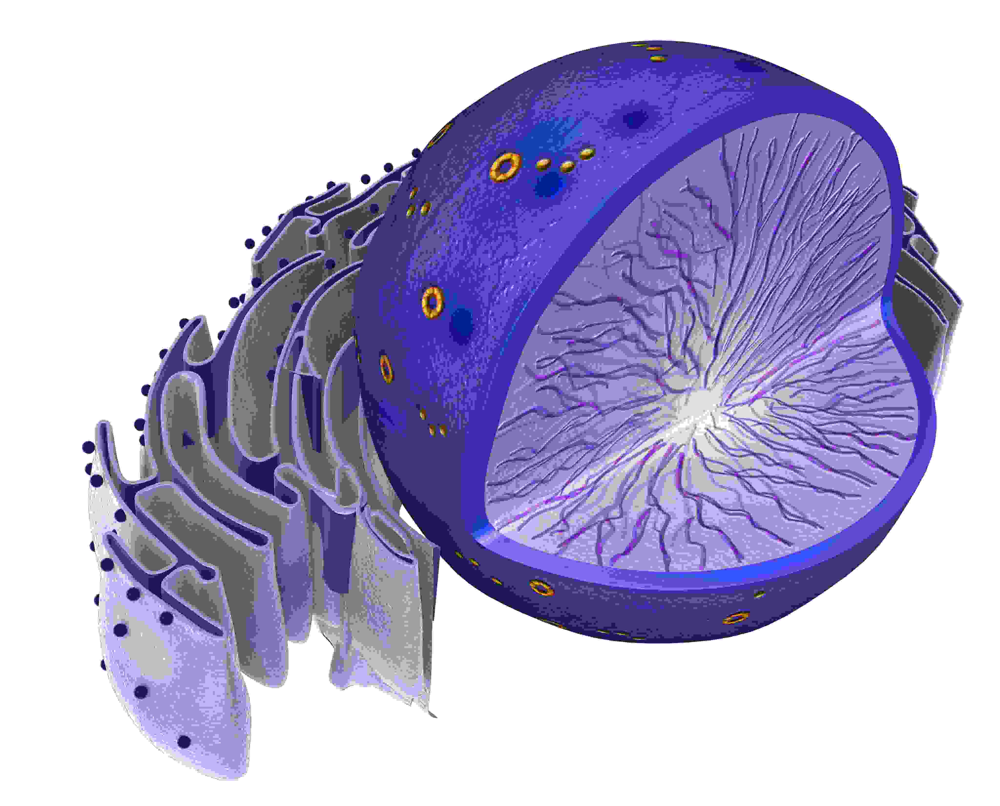

<!-- Erick Pena
Cap4720
Final Project: Cell Model -->

<!DOCTYPE html>
<html>
<head>
  <title> Final Project </title>
  <meta charset="utf-8"/>
  <script src="https://threejs.org/build/three.min.js"></script>
  <script src="https://threejs.org/examples/js/loaders/OBJLoader.js"></script>
	<script src="https://threejs.org/examples/js/loaders/MTLLoader.js"></script>
  <script src="https://threejs.org/examples/js/controls/OrbitControls.js"></script>
  <script src="http://ajax.googleapis.com/ajax/libs/jquery/3.3.1/jquery.min.js"></script>
  <script src="https://cdnjs.cloudflare.com/ajax/libs/dat-gui/0.7.6/dat.gui.min.js"></script>
  <script type="x-shader/x-vertex" id="vertexShader">
  precision highp float;

  uniform mat4 modelViewMatrix;
  uniform mat4 projectionMatrix;
  uniform mat3 normalMatrix;

  attribute vec3 position;
  attribute vec2 uv;

  varying vec2 vUV;

  void main(){

    vUV = uv;

    gl_Position = projectionMatrix *modelViewMatrix * vec4( position, 1.0 );
  }
  </script>
  <script type="x-shader/x-vertex" id="fragShader">
    precision highp float;

    uniform sampler2D cover;

    varying vec2 vUV;

      void main(){

        gl_FragColor = texture2D(cover, vUV);
      }
  </script>
  <style>
    body{
      margin: 0;
      overflow: hidden;
    }

    p{
      margin: 1em;
      text-align: center;
    }

    img{
      display: block;
      margin-left: auto;
      margin-right: auto;
      margin-bottom: 1em;
    }

    .popup{
      background-color: rgba(255, 255, 255, 0.70);
      border-radius: 5px;
      bottom: 45%;
      height: auto;
      left: 10%;
      max-width: 20%;
      padding: 5px 10px 5px 15px;
      padding: 0;
      position: absolute;
      margin: 0;
    }

    .dimension{
      width: 90%;
      height: auto;
      margin-top: 35px;
    }

    #goBack{
      color: black;
      display: block;
      font-weight: 900;
      font-size: 2em;
      left: 4%;
      top: 0%;
      position: absolute;
    }
  </style>
</head>
<body>
  <div class="popup">
    <div class"text"></div>
  </div>
  <script>
    "use strict";

    let WIDTH = window.innerWidth;
    let HEIGHT = window.innerHeight;

    var keyLight, fillLight, backLight;
    var scene, camera, renderer, cameraControls, guiController;

    var raycaster = new THREE.Raycaster();
    var mouse = new THREE.Vector2(), INTERSECTED;
    var cellParts = new Array();

    // Function in charge to create and set up imporant components of the scene.
    function init(){

      $(".popup").hide();

      scene = new THREE.Scene();
      guiController = new dat.GUI();
      camera = new THREE.PerspectiveCamera(50, WIDTH / HEIGHT, 1, 1000);
      renderer = new THREE.WebGLRenderer({antialias: true});

      renderer.setPixelRatio( window.devicePixelRatio );
      renderer.setSize(WIDTH, HEIGHT);
      renderer.setClearColor(0x000000, 1);
      document.body.appendChild(renderer.domElement);

      createNeighborCells();
      loadObject();
      lightingSetUp();

      camera.position.set(40, 40, 40);
      camera.lookAt(new THREE.Vector3(0,0,0));

      renderer.render(scene, camera);
    }

    // It loads major components of the cell object.
    function loadObject(){

      let material = new THREE.MeshStandardMaterial();
      var objLoader = new THREE.OBJLoader();
      var mtlLoader = new THREE.MTLLoader();

      mtlLoader.setPath('./cellModel/');
      mtlLoader.load("CellAnatomy.mtl", function (mtls){

        mtls.preload();

        objLoader.setMaterials(mtls);
        objLoader.setPath("./cellModel/");

        objLoader.load("CellAnatomy.obj", function (obj){

            obj.scale.set(0.1,0.1,0.1);
            obj.name = "cellObject";

            // Adding the scaling property to the GUI.
            let objectScaling = guiController.addFolder("Scaling");
                objectScaling.add(obj.scale, "y", 1 / 10, 2).name("Scale")
                .onChange(function(val){
                  console.log("Scale: "+ val);
                  obj.scale.y = val;
                  obj.scale.x = val;
                  obj.scale.z = val;
                  renderer.render(scene, camera);
                });

            // Adding the rotation property to the GUI.
            let objectRotation = guiController.addFolder("Rotation");
                objectRotation.add(obj.rotation, "y", 0, 2 * Math.PI).name("Rotate")
                .onChange(function (val){
                  console.log("Rotate: "+ val);
                  renderer.render(scene, camera);
                });

            let objectTranslation = guiController.addFolder("Translation");
                objectTranslation.add(obj.position, "x", -20, 20).name("x Translation")
                .onChange(function (val){
                  console.log("Translate x: "+ val);
                  renderer.render(scene, camera);
                });

                objectTranslation.add(obj.position, "y", -20, 20).name("y Translation")
                .onChange(function (val){
                  console.log("Translate y: "+ val);
                  renderer.render(scene, camera);
                });

                objectTranslation.add(obj.position, "z", -20, 20).name("z Translation")
                .onChange(function (val){
                  console.log("Translate z: "+ val);
                  renderer.render(scene, camera);
                });

            scene.add(obj);

            // Stores all of the objects from the scene in an array that will be used later
            // for interactions.
            scene.traverse(function(children){
              cellParts.push(children);
            });

            renderer.render(scene, camera);
          },
          function (xhr){

            if (xhr.lengthComputable) {

              var percentComplete = xhr.loaded / xhr.total * 100;
              console.log( 'cell ' + Math.round( percentComplete, 2 ) + '% downloaded' );
            }
          }, function (){});
      });
    }

    // Set ups the lighting in the scene.
    function lightingSetUp(){

     keyLight = new THREE.DirectionalLight(0xFFFFFF, 1.0);
     keyLight.position.set(3, 10, 3).normalize();
     keyLight.name = "Light1";

     fillLight = new THREE.DirectionalLight(0xFFFFFF, 1.2);
     fillLight.position.set(0, -5, -1).normalize();
     fillLight.name = "Light2";

     backLight = new THREE.DirectionalLight(0xFFFFFF, 0.5);
     backLight.position.set(-10, 0, 0).normalize();
     backLight.name = "Light3";

     scene.add(keyLight);
     scene.add(fillLight);
     scene.add(backLight);
    }

    // Creates random neighbor cells around the scene.
    function createNeighborCells(){

      var array = new Array();
      var cellPositions = new Array();

      // Array the contains fix positions for neighbor cells.
      cellPositions.push(-89.3837279950771);
      cellPositions.push(-142.1328674980365);
      cellPositions.push(-349.87550855851305);

      cellPositions.push(-223.32720969134115);
      cellPositions.push(-297.8942624611899);
      cellPositions.push(489.4060068507289);

      cellPositions.push(-297.9375904074462);
      cellPositions.push(-179.997998506319);
      cellPositions.push(434.85706179775775);

      cellPositions.push(-103.14517395561478);
      cellPositions.push(-224.56336401620294);
      cellPositions.push(-262.54609417884353);

      cellPositions.push(-27.395086427601314);
      cellPositions.push(-385.5400787010433);
      cellPositions.push(-352.1989179669081);

      cellPositions.push(-360.83258065228586);
      cellPositions.push(-100.64813434224845);
      cellPositions.push(-97.02796592925534);

      cellPositions.push(-398.3297307080477);
      cellPositions.push(-66.22930655000425);
      cellPositions.push(-225.59875363251174);

      cellPositions.push(405.1131090482779);
      cellPositions.push(143.88113972097028);
      cellPositions.push(310.4022310528064);

      cellPositions.push(-264.3245450648799);
      cellPositions.push(-228.868464037242);
      cellPositions.push(0.8838596830101437);

      // Array that stores the three different textures for the neighbor cells.
      array.push("/images/cellTextures/cover1.jpg");
      array.push("/images/cellTextures/cover2.jpg");
      array.push("/images/cellTextures/cover3.jpg");

      var geometry = new THREE.SphereBufferGeometry(35, 35, 35);

      for (var i = 0; i < 27; i  = i + 3) {

        var random = Math.floor(Math.random() * 3);

        let uniforms = {
          cover: {
            type: "t",
            value: new THREE.TextureLoader().load(array[random], function(texture){

              renderer.render(scene, camera);
            })
          }
        }

        var material = new THREE.RawShaderMaterial({
          uniforms:     uniforms,
          vertexShader: document.getElementById("vertexShader").textContent,
          fragmentShader: document.getElementById("fragShader").textContent

        });

        var object = new THREE.Mesh(geometry, material);

        // This statements produce random locations for neighbor cells.
        // object.position.x = Math.random() * 900 - 400;
        // object.position.y = Math.random() * 900 - 400;
        // object.position.z = Math.random() * 900 - 400;

        object.position.x = cellPositions[i];
        object.position.y = cellPositions[i + 1];
        object.position.z = cellPositions[i + 2];

        object.name = "neighborCell";
        scene.add(object)
      }
    }

    function getSphere(radius){

      var geometry = new THREE.SphereBufferGeometry(radius, 35, 35);
      var material = new THREE.MeshBasicMaterial( {color: 0xFDB813} );

      var mesh = new THREE.Mesh(geometry, material);

      return mesh;
    }

    // Event listener for window resize.
    function handleResize(){

      window.addEventListener("resize", function (){

        WIDTH = window.innerWidth;
        HEIGHT = window.innerHeight;

        renderer.setSize(WIDTH, HEIGHT);
        camera.apsect = WIDTH / HEIGHT;
        camera.updateProjectionMatrix();


        renderer.render(scene, camera);
      });
    }

    // Enables orbital control.
    function orbitalControl(){

      cameraControls = new THREE.OrbitControls(camera, renderer.domElement);
      cameraControls.addEventListener("change", function(){

        camera.updateProjectionMatrix();
        renderer.render(scene, camera);

      });
    }

    // Creates a background image.
    function setBackground(){
      var loader = new THREE.TextureLoader().load("images/3dCellBackground.jpg", function (texture){

        scene.background = texture;
        renderer.render(scene, camera);
      });
    }

    // Contains information about parts of the cell.
    function info(name){

      $(".popup").empty();

      switch (name) {
        case "nucleolus":
          $(".popup").append("<p><strong>Nucleolus</strong>:</br>The nucleolus is a round body located inside the nucleus of a eukaryotic cell. It is not surrounded by a membrane but sits in the nucleus. The nucleolus makes ribosomal subunits from proteins and ribosomal RNA, also known as rRNA </p>");
          break;

        case "nucleus":
          $(".popup").append("<p><strong>Nucleus</strong>:</br>The nucleus is a highly specialized organelle that serves as the information and administrative center of the cell. This organelle has two major functions. It stores the cell's hereditary material, or DNA, and it coordinates the cell's activities, which include intermediary metabolism, growth, protein synthesis, and reproduction (cell division).</p>");
          break;

        case "cover":
          $(".popup").append("<p><strong>Cell Membrane</strong>:</br>The cell membrane, therefore, has two functions: first, to be a barrier keeping the constituents of the cell in and unwanted substances out and, second, to be a gate allowing transport into the cell of essential nutrients and movement from the cell of waste products.</p>");
          break;

        case "lysosome":
          $(".popup").append("<p><strong>Lysosome</strong>:</br>Lysosomes are organelles that contain digestive enzymes. They digest excess or worn out organelles, food particles, and engulfed viruses or bacteria. Lysosomes are like the stomach of the cell.</p>");
          break;

        case "mitochondria":
          $(".popup").append("<p><strong>Mitochondria</strong>:</br>Mitochondria are known as the powerhouses of the cell. They are organelles that act like a digestive system which takes in nutrients, breaks them down, and creates energy rich molecules for the cell.</p>");
          break;

        case "endoplasmicReticulum":
          $(".popup").append("<p><strong>Endoplasmic Reticulum</strong>:</br>It is mainly responsible for the transportation of proteins and other carbohydrates to another organelle, which includes lysosomes, Golgi apparatus, plasma membrane, etc. They provide the increased surface area for cellular reactions.</p>");
          break;

        case "golgiApparatus":
          $(".popup").append("<p><strong>Golgi Apparatus</strong>:</br>It has been likened to the cell's post office. A major function is the modifying, sorting and packaging of proteins for secretion. It is also involved in the transport of lipids around the cell, and the creation of lysosomes.</p>");
          break;

        case "microtubes":
          $(".popup").append("<p><strong>Microtubules</strong>:</br>Microtubules are conveyer belts inside the cells. They move vesicles, granules, organelles like mitochondria, and chromosomes via special attachment proteins.</p>");
          break;

        case "03_low_1":
          $(".popup").append("<p><strong>Centrosomes</strong>:</br>The main purpose of a centrosome is to organize microtubules and provide structure for the cell, as well as work to pull chromatids apart during cell division.</p>");
          break;

        case "pores":
          $(".popup").append("<p><strong>Nuclear Pores</strong>:</br>Nuclear pores are protein-based channels in the nuclear envelope. They regulate the movement of molecules from the nucleus to the cytoplasm, and vice versa.</p>");
          break;

        case "vesicles":
          $(".popup").append("<p><strong>Vesicles</strong>:</br>Vesicles are cellular organelles that are composed of a lipid bilayer. You can think of vesicles as cellular envelopes that are used to transport materials from one place to another. Vesicles also function in metabolism and enzyme storage as well.</p>");
          break;

        case "filler":
          $(".popup").append("<p><strong>Nuclear Envelope</strong>:</br> The nuclear envelope, also known as the nuclear membrane, is made up of two lipid bilayer membranes which in eukaryotic cells surrounds the nucleus, which encases the genetic material.</p>");
          break;
      }

      $(".popup").show();

    }

    // Function that helps to highlight a spefic part of the cell.
    function onDocumentMouseDown(event){
      event.preventDefault();

      mouse.x = (event.clientX / window.innerWidth) * 2 - 1;
      mouse.y = -(event.clientY / window.innerHeight) * 2 + 1;

      raycaster.setFromCamera(mouse, camera);

      var intersects = raycaster.intersectObjects(cellParts);

      if (intersects.length > 0 && intersects[0].object.name != "mainBody" && intersects[0].object.name != "neighborCell"){

        if (INTERSECTED != intersects[0].object){

          if (INTERSECTED)
            INTERSECTED.material.emissive.setHex(INTERSECTED.currentHex);

          INTERSECTED = intersects[0].object;
          INTERSECTED.currentHex = INTERSECTED.material.emissive.getHex();
          INTERSECTED.material.emissive.setHex(0xff0000);

          console.log(intersects[0].object.name);

          info(intersects[0].object.name);

          $(".image").click(function(){

            $(".popup").empty();

            $(".popup").append("<div id='goBack'>&#8592</div>");

            $(this).addClass("dimension");

            $(".popup").append(this);

            $(".popup").addClass("popup");

            $(".popup").show();

            $("#goBack").click(function(){

              info(intersects[0].object.name);
            });

          });
        }
      }
      else{

        if (INTERSECTED)
          INTERSECTED.material.emissive.setHex(INTERSECTED.currentHex);

        INTERSECTED = null;

        // $(".popup").hide();
      }
    }

    function animate(){

      requestAnimationFrame(animate);
      renderer.render(scene, camera);
    }

    init();
    setBackground();
    orbitalControl();
    handleResize();
    animate();

    document.addEventListener("mousedown", onDocumentMouseDown, false);
  </script>
</body>
</html>
